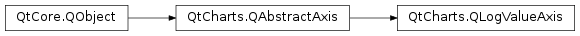

QtCharts.QLogValueAxis¶
Note
This class was introduced in Qt 5.7.
Synopsis¶
Functions¶
- def
base() - def
labelFormat() - def
max() - def
min() - def
minorTickCount() - def
setBase(base) - def
setLabelFormat(format) - def
setMax(max) - def
setMin(min) - def
setMinorTickCount(minorTickCount) - def
setRange(min, max) - def
tickCount()
Signals¶
- def
baseChanged(base) - def
labelFormatChanged(format) - def
maxChanged(max) - def
minChanged(min) - def
minorTickCountChanged(minorTickCount) - def
rangeChanged(min, max) - def
tickCountChanged(tickCount)
Detailed Description¶
-
class
PySide2.QtCharts.QtCharts.QLogValueAxis([parent=nullptr])¶ Parameters: parent – PySide2.QtCore.QObject
-
PySide2.QtCharts.QtCharts.QLogValueAxis.base()¶ Return type: PySide2.QtCore.qreal
-
PySide2.QtCharts.QtCharts.QLogValueAxis.baseChanged(base)¶ Parameters: base – PySide2.QtCore.qreal
-
PySide2.QtCharts.QtCharts.QLogValueAxis.labelFormat()¶ Return type: unicode
-
PySide2.QtCharts.QtCharts.QLogValueAxis.labelFormatChanged(format)¶ Parameters: format – unicode
-
PySide2.QtCharts.QtCharts.QLogValueAxis.max()¶ Return type: PySide2.QtCore.qreal
-
PySide2.QtCharts.QtCharts.QLogValueAxis.maxChanged(max)¶ Parameters: max – PySide2.QtCore.qreal
-
PySide2.QtCharts.QtCharts.QLogValueAxis.min()¶ Return type: PySide2.QtCore.qreal
-
PySide2.QtCharts.QtCharts.QLogValueAxis.minChanged(min)¶ Parameters: min – PySide2.QtCore.qreal
-
PySide2.QtCharts.QtCharts.QLogValueAxis.minorTickCount()¶ Return type: PySide2.QtCore.int
-
PySide2.QtCharts.QtCharts.QLogValueAxis.minorTickCountChanged(minorTickCount)¶ Parameters: minorTickCount – PySide2.QtCore.int
-
PySide2.QtCharts.QtCharts.QLogValueAxis.rangeChanged(min, max)¶ Parameters: - min –
PySide2.QtCore.qreal - max –
PySide2.QtCore.qreal
- min –
-
PySide2.QtCharts.QtCharts.QLogValueAxis.setBase(base)¶ Parameters: base – PySide2.QtCore.qreal
-
PySide2.QtCharts.QtCharts.QLogValueAxis.setLabelFormat(format)¶ Parameters: format – unicode
-
PySide2.QtCharts.QtCharts.QLogValueAxis.setMax(max)¶ Parameters: max – PySide2.QtCore.qreal
-
PySide2.QtCharts.QtCharts.QLogValueAxis.setMin(min)¶ Parameters: min – PySide2.QtCore.qreal
-
PySide2.QtCharts.QtCharts.QLogValueAxis.setMinorTickCount(minorTickCount)¶ Parameters: minorTickCount – PySide2.QtCore.int
-
PySide2.QtCharts.QtCharts.QLogValueAxis.setRange(min, max)¶ Parameters: - min –
PySide2.QtCore.qreal - max –
PySide2.QtCore.qreal
- min –
-
PySide2.QtCharts.QtCharts.QLogValueAxis.tickCount()¶ Return type: PySide2.QtCore.int
-
PySide2.QtCharts.QtCharts.QLogValueAxis.tickCountChanged(tickCount)¶ Parameters: tickCount – PySide2.QtCore.int
© 2018 The Qt Company Ltd. Documentation contributions included herein are the copyrights of their respective owners. The documentation provided herein is licensed under the terms of the GNU Free Documentation License version 1.3 as published by the Free Software Foundation. Qt and respective logos are trademarks of The Qt Company Ltd. in Finland and/or other countries worldwide. All other trademarks are property of their respective owners.